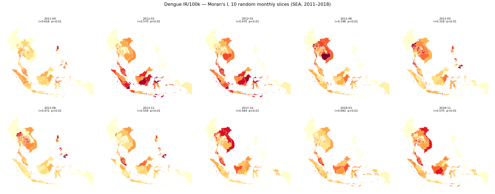
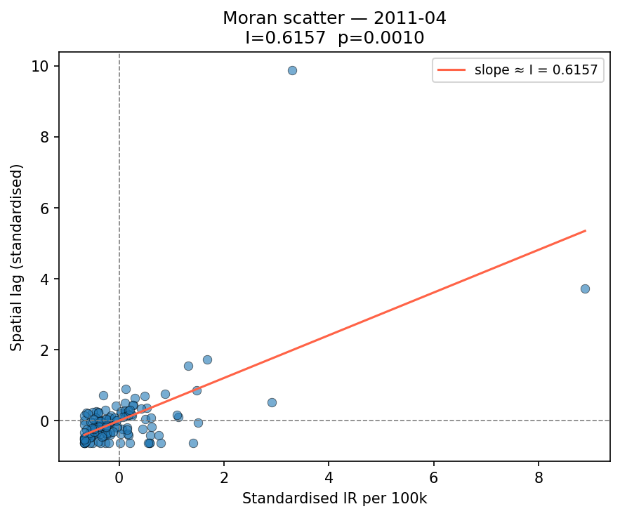

Dengue Data
Historical dengue surveillance records from OpenDengue (SEA provinces) and the Taiwan Ministry of Health (BSA)
This page presents the dengue case data underpinning both study arms: the OpenDengue dataset used to train and evaluate the SEA Provinces model, and individual case records from the Taiwan Ministry of Health used by the Taiwan BSA model.
Arm 1 — Southeast Asia Provinces (OpenDengue)
Interactive dashboards showing temporal and spatial dengue case trends by WHO region, generated from the OpenDengue dataset (SEA, 2011–2018).
Data source: OpenDengue — a global open-access dengue surveillance database. Spatial imputation was performed using GAUL 2024 admin-1 boundaries. Spatial autocorrelation was assessed via Moran’s I.

Arm 2 — Taiwan Basic Statistics Area (Taiwan Ministry of Health)
Individual dengue case records from the Taiwan Centers for Disease Control (Taiwan CDC / MoH), aggregated to Basic Statistics Area (BSA) level. BSAs are the finest spatial unit of census data maintained by the Taiwanese government and are used as the prediction target in the Taiwan BSA model.
Case Counts by Year
Warning
Placeholder — Taiwan MoH case data pipeline not yet integrated. This panel will display annual confirmed dengue case counts disaggregated by BSA once the taiwan-bsa-module data pipeline is operational.
⚠️ Taiwan MoH BSA data not yet available — implement taiwan-bsa-module/data/moh_pipeline.py first.Temporal Trends — Taiwan
⚠️ Taiwan MoH temporal data not yet available.Spatial Distribution — Taiwan BSA Choropleth
⚠️ Taiwan BSA spatial data not yet available.Case Demographics
Warning
Placeholder — Summary statistics of case demographics (age, sex, serotype, clinical severity) from Taiwan MoH individual case reports will appear here once the data pipeline is connected.
⚠️ Taiwan MoH demographic data not yet available.Imported vs Local Transmission
A key feature of the Taiwan BSA model is distinguishing imported cases (travellers returning from SEA) from locally-acquired cases. The SEA Provinces model (Arm 1) provides the international risk context feeding into this classification.
⚠️ Imported/local classification data not yet available — requires integration with taiwan-bsa-module and Arm 1 risk states.